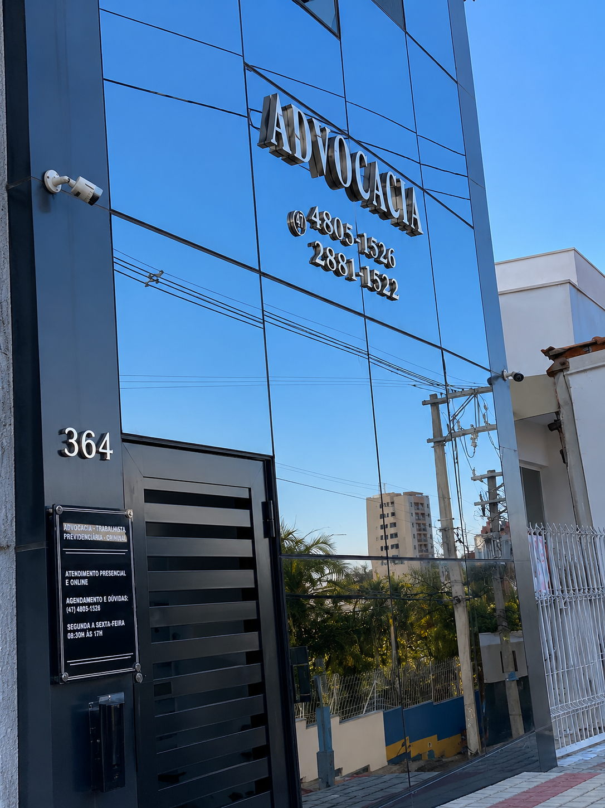

Divórcio
Orientação jurídica para questões relacionadas ao encerramento do vínculo matrimonial.
Atendimento jurídico personalizado para questões familiares e sucessórias, com orientação clara e acompanhamento próximo em cada etapa.

Questões familiares envolvem decisões importantes e, muitas vezes, momentos delicados. Por isso, o atendimento busca unir conhecimento jurídico, estratégia e acolhimento.
A proposta é oferecer uma comunicação clara e um acompanhamento próximo, respeitando as particularidades de cada situação.
Nome: Bianca Lima
OAB: Inserir quando confirmado
Formação: Inserir posteriormente
Especializações: Inserir posteriormente
Experiência: Inserir posteriormente
Orientação jurídica para questões relacionadas ao encerramento do vínculo matrimonial.
Informações e orientação sobre questões relacionadas à guarda e convivência familiar.
Orientação sobre demandas envolvendo alimentos e responsabilidades familiares.
Orientação jurídica para questões relacionadas à união estável e seus efeitos.
Orientação sobre questões patrimoniais relacionadas ao contexto familiar.
Informações e orientação em questões relacionadas à sucessão e inventário.
Estrutura inicial para apresentar serviços relacionados ao planejamento sucessório.
Estrutura inicial para informações sobre questões relacionadas à filiação.
Um processo pensado para tornar o primeiro contato mais claro e organizado.
O cliente entra em contato para apresentar brevemente sua necessidade.
A situação é analisada para compreender as necessidades jurídicas envolvidas.
São apresentados os caminhos jurídicos possíveis e as próximas etapas.
O cliente recebe acompanhamento durante o desenvolvimento do trabalho contratado.
Entre em contato para conversar sobre o seu caso e entender quais podem ser os próximos passos.
Falar pelo WhatsAppInformações gerais para ajudar você a entender como funciona o primeiro contato.
O primeiro contato serve para apresentar brevemente a situação e compreender quais informações podem ser relevantes para uma orientação inicial.
A possibilidade de atendimento online deve ser confirmada no momento do contato, conforme a situação e a disponibilidade do escritório.
Os documentos necessários variam de acordo com o caso. Após compreender a situação, poderão ser indicados os documentos relevantes.
O procedimento depende das circunstâncias de cada família. Uma avaliação individual é necessária para identificar os caminhos jurídicos aplicáveis.
Questões de guarda devem ser analisadas considerando as circunstâncias concretas da família e os interesses envolvidos.
A análise depende das circunstâncias específicas do caso. O atendimento pode esclarecer quais informações e documentos são relevantes.
O procedimento pode variar conforme as características da sucessão. É necessário analisar a situação concreta para orientar os próximos passos.
A disponibilidade pode ser confirmada diretamente com o escritório no momento do contato.
Entre em contato para obter informações sobre atendimento e orientação jurídica.
R. Marcílio Dias, 364 – Centro
Jundiaí – SP
CEP 13207-740
(11) 97428-8484
Segunda a sexta-feira
das 9h às 17h30.